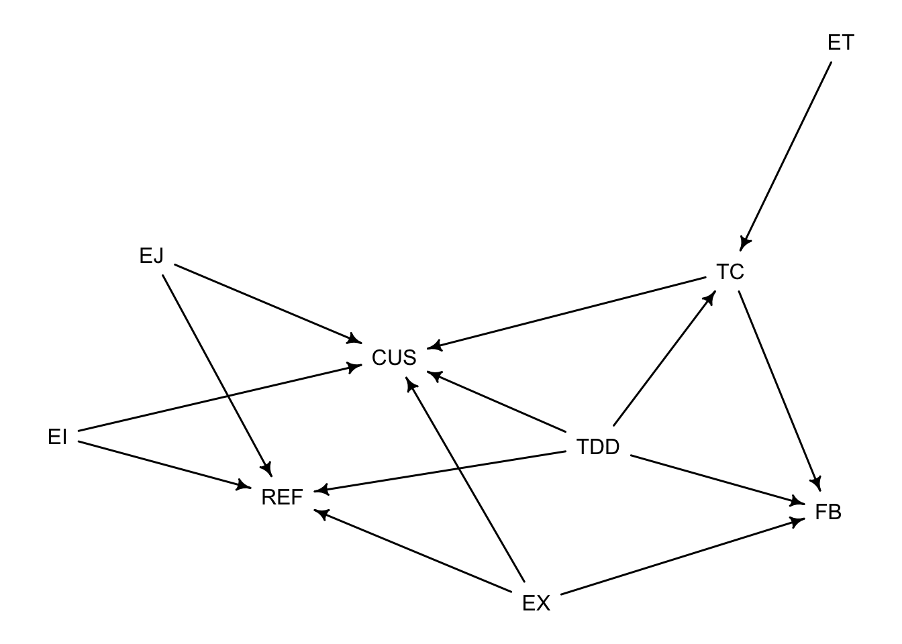

The model should describe how TDD is (positively) associated with developers’ productivity and software quality.
Completed User stories in unit of time (CUS) is a proxy for developers’ productivity
Number of functional bugs (FB) is a proxy for software quality
Compliance to TDD (TDD) is the percentage of development cycles that followed TDD test-code-refactor
There are other by-products of TDD:
Number of refactorings (REF) is the amount of refactorings applied to the codey
Number of unit test cases (TC) is the amount of test cases produced
Test cases code coverage (COV) of the test cases
Developers’ experience is a mediator (?) of the effect of TDD
Years of Experience (EX) in development
Years of programming experience (EJ) with the same programming language
Familiarity with the IDE (EI) relevant functionalities (running tests, creating test stubs, automated refactorings).
Familiarity with the testing framework (ET) and its API
library(dagitty)library(rethinking)
Loading required package: rstan
Loading required package: StanHeaders
Loading required package: ggplot2
rstan (Version 2.21.7, GitRev: 2e1f913d3ca3)
For execution on a local, multicore CPU with excess RAM we recommend calling
options(mc.cores = parallel::detectCores()).
To avoid recompilation of unchanged Stan programs, we recommend calling
rstan_options(auto_write = TRUE)
Loading required package: cmdstanr
This is cmdstanr version 0.5.3
- CmdStanR documentation and vignettes: mc-stan.org/cmdstanr
A newer version of CmdStan is available. See ?install_cmdstan() to install it.
To disable this check set option or environment variable CMDSTANR_NO_VER_CHECK=TRUE.
Loading required package: parallel
rethinking (Version 2.21)
Attaching package: 'rethinking'
The following object is masked from 'package:rstan':
stan
The following object is masked from 'package:stats':
rstudent
Causal assumptions are modeled using the following DAG
TDD.dag <-dagitty("dag{ TDD -> TC -> FB TDD -> FB TDD -> CUS TDD -> REF ET -> TC -> CUS EJ -> CUS EJ -> REF EX -> REF EX -> FB EX -> CUS EI -> REF EI -> CUS}")drawdag(TDD.dag)

⁄‹››Assumptions:
EX -> CUS. Having worked on a similar problem makes a developer more productive
EX -> REF. Developers have an eye for refactoring patterns
EX -> FB. A more experience developer is less likely to introduce bugs
EI -> CUS. A developer who knows the IDE is more productive as they make use of the IDE features (completion, snippets, etc)
EI -> REF. A developer who knows the IDE can perform automated refactorings
EJ -> CUS. A developer knows the language syntax and does not spend much time consulting documentation or fixing language-specific issues
EJ -> REF. A developer knows language-specific refactorings
ET -> TC. A developer who is familiar with the testing framework can produce more test cases
TC -> FB. More test cases are likely to catch more bugs
TC -> CUS. Test cases act as a safety net which makes a developer more productive
equivalentDAGs(TDD.dag)
[[1]]
dag {
CUS
EI
EJ
ET
EX
FB
REF
TC
TDD
EI -> CUS
EI -> REF
EJ -> CUS
EJ -> REF
ET -> TC
EX -> CUS
EX -> FB
EX -> REF
TC -> CUS
TC -> FB
TDD -> CUS
TDD -> FB
TDD -> REF
TDD -> TC
}
impliedConditionalIndependencies(TDD.dag)
CUS _||_ ET | TC, TDD
CUS _||_ FB | EX, TC, TDD
CUS _||_ REF | EI, EJ, EX, TDD
EI _||_ EJ
EI _||_ ET
EI _||_ EX
EI _||_ FB
EI _||_ TC
EI _||_ TDD
EJ _||_ ET
EJ _||_ EX
EJ _||_ FB
EJ _||_ TC
EJ _||_ TDD
ET _||_ EX
ET _||_ FB | TC, TDD
ET _||_ REF
ET _||_ TDD
EX _||_ TC
EX _||_ TDD
FB _||_ REF | EX, TDD
REF _||_ TC | TDD
Here, I have included REF -> CUS as a cleaner code base makes it easier to develop new features.
An alternative DAG can also include COV -> REF, since a test suite which covers large part of the code base limits regression bugs when introducing refactorings.
The second DAG (TC -> TDD) is excluded, since there is no theory to support it—i.e., one can write a lots of unit tests, without necessarily applying TDD.
The third DAG (REF -> TDD) is interesting. Performing refactorings cleans the code base, which in turn means it is easier to apply TDD or at least the production code necessary to fulfill the green step. In turn, refactoring is self-reinforcing—i.e., more refactoring -> cleaner code -> easier to apply new refactoring once code is added. Notice: this applies also to non-TDD way of writing production code.
As a results of the above, there could be a unobservedCLEAN CODE (CC) variable which influences both REF and TDD, each influencing CUS. This removes TDD -> REF.
Are TC and REF source of post-treatment bias? TC and REF are consequences of the treatment TDD. Basically, the question I would ask the model would be Once we already know weather REF and TC were done, does TDD matter?
There is no need to control on any of the variable. However, I need to decouple the graph related to FB and CUS. Ideally, FB the outcome of a sub-model, which needs to be computed, before addressing CUS (i.e., FB -> CUS).
A model of FB that does not consider CUS
For simplicity, I will start with the DAG which considers only a single outcome of interest FB.